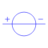
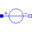

VoltageSourceIcon for voltage sources |

|
Information
This information is part of the Modelica Standard Library maintained by the Modelica Association.
Just the common icon for voltage sources.
Extended by (5)
|
CosineVoltageVariableFrequencyAndAmplitude Modelica.Electrical.Analog.Sources Cosine voltage source with variable frequency and amplitude |
|
|
SineVoltageVariableFrequencyAndAmplitude Modelica.Electrical.Analog.Sources Sine voltage source with variable frequency and amplitude |
|
|
Modelica.Electrical.Analog.Sources Source for constant voltage |
|
|
Modelica.Electrical.Analog.Sources Generic voltage source using the input signal as source voltage |
|
|  |
Modelica.Electrical.Analog.Interfaces Interface for voltage sources |